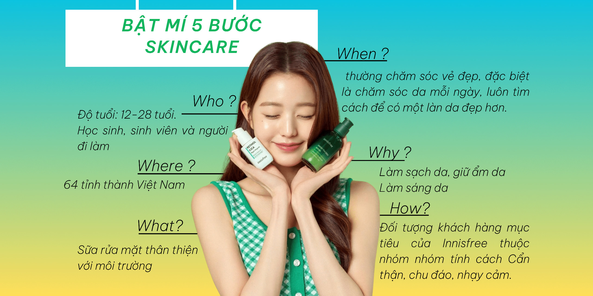
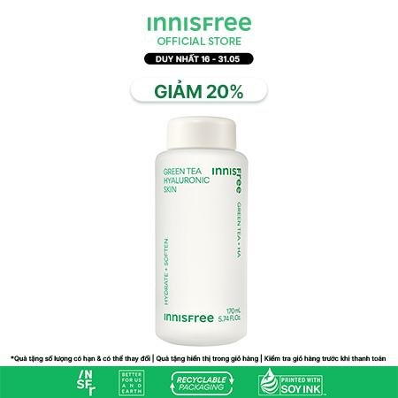
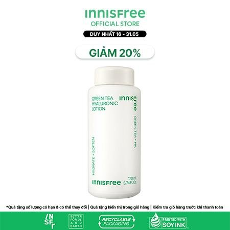
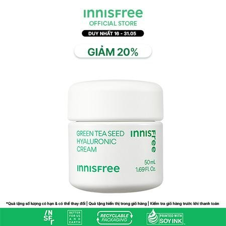
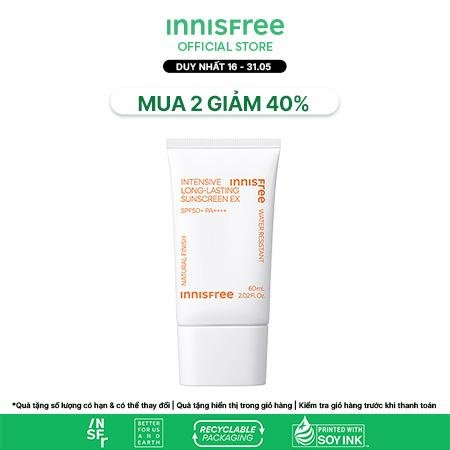

Bật mí 5 bước skincare với Innisfree đúng chuẩn tại nhà
Innisfree vốn nổi tiếng với thành phần thiên nhiên lành tính, giàu thành phần dưỡng chất, có khả năng chăm sóc và nuôi dưỡng từ sâu bên trong mà không làm kích ứng làn da. Vậy bạn đã biết các bước skincare Innisfree đúng chuẩn tại nhà hay chưa? Hãy cùng Cocolux đi khám phá ngay nhé!

Nước tẩy trang
Bước đầu tiên trong chu trình skincare innisfree là sử dụng nước tẩy trang để làm sạch da. Tuỳ thuộc vào tình trạng của da mà bạn có thể lựa chọn các sản phẩm tẩy trang có kết cấu dạng nước, sữa hay dầu. Tẩy trang là giải pháp hoàn hảo giúp làm sạch da, lấy đi bụi bẩn, dầu thừa và cặn makeup trên da.
.jpg)
Nước tẩy trang Innisfree Green Tea Hydrating Amino Acid Cleansing Water 300ml
Sản phẩm nổi bật với chiết xuất 100% Trà Xanh nguyên chất được sản xuất tại cánh đồng Trà Xanh tại đảo Jeju, Hàn Quốc. Nước tẩy trang có kết cấu dạng lỏng giúp nhẹ nhàng tẩy sạch lớp makeup, bụi bẩn, dầu thừa trên da mà không gây tổn thương da. Sản phẩm là giải pháp hoàn hảo dành cho làn da muốn làm sạch lớp make up mỗi ngày, làn da khô cần làm sạch mà không bị khô căng sau khi dùng và làn da dầu cần tìm kiếm một giải pháp tẩy trang dịu nhẹ.
Sữa rửa mặt
Sau khi dùng nước tẩy trang, sữa rửa mặt là bước tiếp theo trong chu trình skincare innisfree giúp làm sạch hoàn toàn bụi bẩn, bã nhờn và dầu thừa trên da. Tuy nhiên, bạn chỉ nên rửa mặt tối đa là 2 lần/ ngày vào mỗi sáng và tối. Nếu lạm dụng sữa rửa mặt, làn da sẽ trở nên khô ráp do bị mất đi lớp màng lipid bảo vệ tự nhiên trên da. Thêm vào đó, đừng quên lựa chọn các sản phẩm sữa rửa mặt phù hợp với từng tình trạng của da. Ví dụ, da dầu, bóng nhờn cần ưu tiên các loại sữa rửa mặt chứa thành phần kháng khuẩn, giảm viêm và hạn chế tiết dầu nhờn. Da nhạy cảm cần ưu tiên các loại sữa rửa mặt với thành phần dịu nhẹ, dạng gel, ít tạo bọt với độ pH lý tưởng là 5.5 - 6.5.

Sữa rửa mặt trà xanh Innisfree Green Tea Cleansing Foam 150ml
Chiết xuất từ 100% Trà Xanh nguyên chất có chứa các chất như Linoleic Acid, Catechin, Vitamin E và các chất khoáng giúp làm sạch, chống oxy hóa, lấy lại sự đàn hồi và tươi trẻ của làn da. Sữa rửa mặt trà xanh Innisfree có kết cấu dạng sữa trắng đục cùng khả năng tạo bọt bông mịn, thích hợp sử dụng cho mọi loại da, đặc biệt làn da dầu và có mụn.
Nước hoa hồng/ Toner
Nước hoa hồng/ Toner hay nước cân bằng da đến từ thương hiệu innisfree từ lâu đã rất nổi tiếng và được các chị em tin dùng. Các sản phẩm này thường có khả năng làm sạch, cân bằng độ pH và se khít lỗ chân lông.

Nước hoa hồng Innisfree Green Tea Balancing Skin 200ml
Nổi bật với thành phần chính là Trà Xanh được chọn lọc từ hơn 1400 giống Trà Xanh ở Hàn Quốc. Sản phẩm nước hoa hồng Innisfree Green Tea có chứa saponin và 16 loại amino acid khác nhau giúp cân bằng độ ẩm, điều hoà, cải thiện cấu trúc da, đồng thời làm mềm và dưỡng ẩm tối ưu cho làn da của bạn. Các thành phần hoàn toàn từ thiên nhiên, không chứa dầu khoáng, silicon hay hương liệu nên sản phẩm phù hợp với mọi làn da, kể cả da nhạy cảm.
Serum
Serum là sản phẩm không thể thiếu trong chu trình skincare innisfree với khả năng cung cấp các tinh chất ở phân tử nhỏ hơn và dễ dàng thẩm thấu, hấp thụ vào các tế bào da. Các sản phẩm serum đặc trị thường hướng đến giải quyết từng vấn đề cụ thể trên da như dưỡng ẩm, dưỡng trắng, trị mụn, serum thu nhỏ lỗ chân lông, làm đều màu da…

Tinh chất dưỡng ẩm Trà Xanh Innisfree Green Tea Seed
Skincare innisfree sẽ không thể nào thiếu kem dưỡng ẩm, làm dịu da mụn Green Tea luôn là “best-seller” của hãng. Sản phẩm có khả năng dưỡng ẩm tức thì, cải thiện tình trạng khô căng, thiếu ẩm, đồng thời tạo hàng rào bảo vệ da chống lại các tác nhân gây hại từ môi trường bên ngoài. Kem dưỡng Trà Xanh được xem là giải pháp hoàn hảo dành cho da mụn, da hỗn hợp thiên dầu, da thiếu nước.
Kem dưỡng da
Trong chu trình skincare Innisfree, kem dưỡng da là bước không thể thiếu giúp chăm sóc và bảo vệ làn da một cách tối ưu. Vào ban ngày, kem dưỡng da có nhiệm vụ chính là bảo vệ da, chống oxy hóa, ngăn ngừa sự hình thành của các gốc tự do gây hại cho da. Trong chu trình skincare ban đêm, kem dưỡng da có tác dụng khoá ẩm, ngăn chặn việc bay hơi dưỡng chất của các bước chăm sóc da trước đó. Mỗi dòng kem dưỡng khác nhau của nhà Innisfree sẽ phù hợp để giải quyết từng vấn đề mà làn da đang phải đối mặt với các công dụng như dưỡng trắng, nâng tông, cấp ẩm, chống lão hoá…

Kem dưỡng ẩm, làm dịu cho da mụn Innisfree Green Tea 50ml
Tinh chất dưỡng ẩm Trà Xanh Innisfree Green Tea Seed
Chứa các thành phần chính như Niacinamide, Hyaluronic Acid, chiết xuất từ mầm và lá Trà Xanh hữu cơ… có khả năng làm dịu da, cấp nước dồi dào, chống lão hoá và dưỡng sáng da hiệu quả. Sản phẩm có kết cấu lỏng mịn, màu đục nhẹ, thẩm thấu nhanh trên da mà không để lại cảm giác nhờn rít. Tinh chất dưỡng da Trà xanh Innisfree với bảng thành phần lành tính nên phù hợp với mọi làn da, kể cả da nhạy cảm, dễ kích ứng hoặc đang trong tình trạng bị kích ứng.
Kem chống nắng
Kem chống nắng là sản phẩm bảo vệ không thể thiếu trong chu trình skincare innisfree giúp bảo vệ da khỏi tia UV gây hại, ngăn ngừa ung thư da và tăng cường sức đề kháng cho da. Với cam kết chỉ sử dụng các thành phần thiên nhiên, Innisfree mang tới các sản phẩm kem chống nắng đáng tin cây, an toàn và lành tính với mọi làn da, kể cả da nhạy cảm.

Trên đây là những thông tin gợi ý về các sản phẩm đến từ thương hiệu Innisfree - Hàn Quốc giúp hoàn thiện chu trình skincare Innisfree mỗi ngày của bạn. Thực hiện đều đặn các bước chăm sóc da này chính là cách hoàn hảo để chăm sóc, bảo vệ và phục hồi làn da từ sâu bên trong, mang tới một làn da căng mịn đáng mơ ước.
thẻ tag: nuoctaytrang; suaruamat; tinhchat; toner; kemduong; kemchongnang; innisfree; greentea.


.png)
.png)
.png)

.png)
.png)
.png)